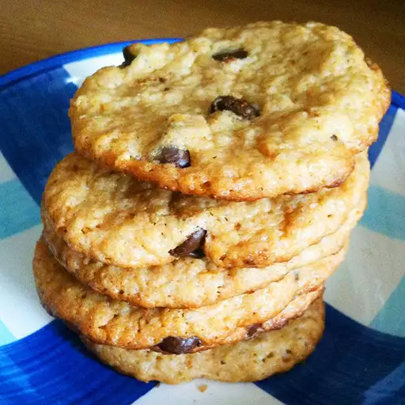

This recipe is gluten-free and delicious! Pecans are great in these, but feel free to use
peanuts or any other nut you choose.
Combine peanut butter, eggs, and sugar and mix until smooth. Mix in chocolate
chips and nuts, if desired. Spoon dough by tablespoons onto a cookie sheet.
Bake for 10 to 12 minutes or until lightly browned. Let the cookies cool on the
cookie sheets for 5 to 10 minutes before removing.